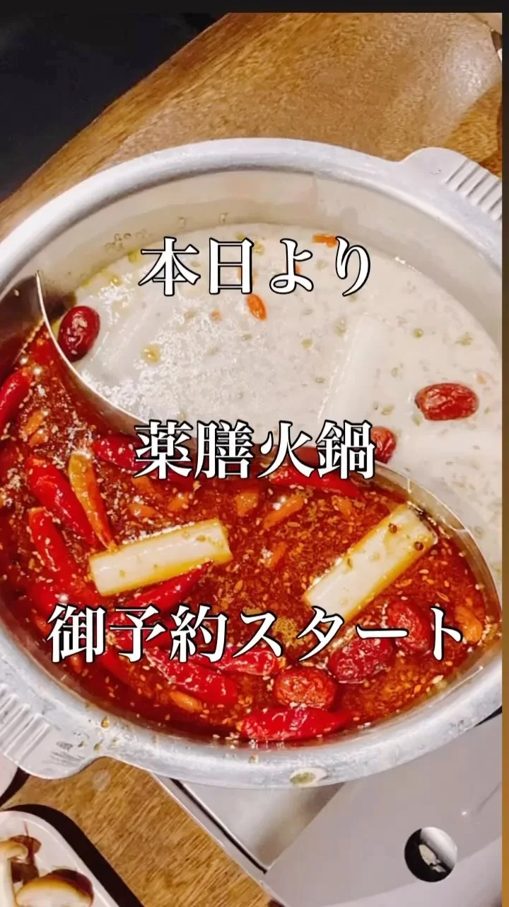

2023年1月31日
本場中国でも人気の

本場中国でも人気の キノコの薬膳火鍋 本日よりご予約スタート 豚肉 ラム肉 野菜 キノコ４〜5種 スパイスたっぷり薬膳出汁 追加で麺とご飯を ご注文いただけます ⚫︎前日予約 ⚫︎３名様分よりご予約可能 ⚫︎１人前2500円（税込） まだまだ寒い日が続きますので、 ぜひとも火鍋で温まってください😉 #中華バル#中華#中華料理#福島区グルメ#路地裏#B級グルメ#中国#チャイニーズ#路地裏チャイニーズ有馬#有馬#シュウマイ#餃子#点心#フォローミー#followme#パクチー#麻婆豆腐 #火鍋#薬膳火鍋